Cici Wela Sari, S.T.
Software Engineer & Data Analyst
Fresh graduate S1 Teknik Informatika, berpredikat Cumlaude (IPK 3.90/4.00) dengan spesialisasi komprehensif dalam pengembangan perangkat lunak (Software Development) dan pengolahan data (Data Analysis). Memiliki pengalaman nyata di instansi pemerintah dan BUMN (BPS Provinsi Riau & PT Kilang Pertamina Internasional RU II Dumai) dalam merancang aplikasi end-to-end (Laravel, ASP.NET Core) serta mengolah data statistik berskala besar. Memiliki learning agility tinggi, pemikiran analitis tajam, serta kemampuan teknis kuat untuk menjembatani rekayasa sistem dan wawasan berbasis data[cite: 4, 6].
3.5
Tahun Masa Studi
3.90
IPK (Cumlaude)
11+
Sertifikasi & Kredensial
02. SKILLS & LANGUAGES
Kompetensi stack teknologi, keterampilan penunjang kerja, dan penguasaan bahasa.
ASP.NET Core 8, Laravel, Python, PHP, C#, Java, C++, JavaScript, React Native, React.js, RESTful API[cite: 4].
SQL Server (SSMS), MySQL Workbench, Pandas, Scikit-learn, Exploratory Data Analysis (EDA), Random Forest & C4.5[cite: 4].
Hardware/Software Troubleshooting, Computer Networking, Cisco Packet Tracer, Git/GitHub, Visual Studio Code[cite: 4].
Analytical Thinking, Problem Solving, Team Collaboration, Detail-Oriented, Time Management, Leadership[cite: 4].
Kompetensi profesional penuh
Kelas Internasional | Skor TOEFL: 580
03. EDUCATION
Pencapaian akademik unggul dengan dedikasi tinggi di institusi terkemuka.
Lulus Predikat Cumlaude (Masa studi 3,5 Tahun)
Aktif mendalami rekayasa perangkat lunak, sistem basis data, dan analisis data. Menyelesaikan skripsi riset data medis rumah sakit menggunakan algoritma Random Forest dan C4.5.
Studi Lintas Disiplin Ilmu Komputer & Teknik Elektro
Terpilih secara nasional untuk mengikuti program pertukaran pelajar guna memperdalam wawasan keilmuan teknologi dan memperluas kolaborasi lintas budaya.
04. WORK EXPERIENCE
Kontribusi nyata dalam rekayasa sistem, pengembangan aplikasi, dan pengajaran akademik.
05. ORGANIZATION & VOLUNTEERING
Dedikasi dalam kepemimpinan organisasi mahasiswa, tata kelola administrasi, dan pengabdian masyarakat.
Organisasi Robotika & Inovasi Teknologi Mahasiswa
Pendampingan Akademik & Pengabdian Masyarakat
06. PROJECTS
Bukti nyata portofolio pengembangan perangkat lunak, rekayasa IoT, dan penelitian akademik.
Platform berbasis web untuk memantau, mengelola, dan mengoptimalkan kegiatan perencanaan secara terintegrasi di BPS Provinsi Riau.
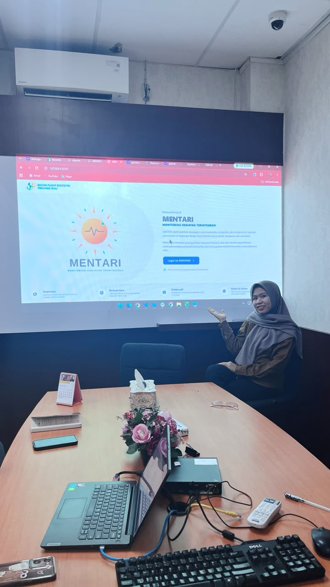
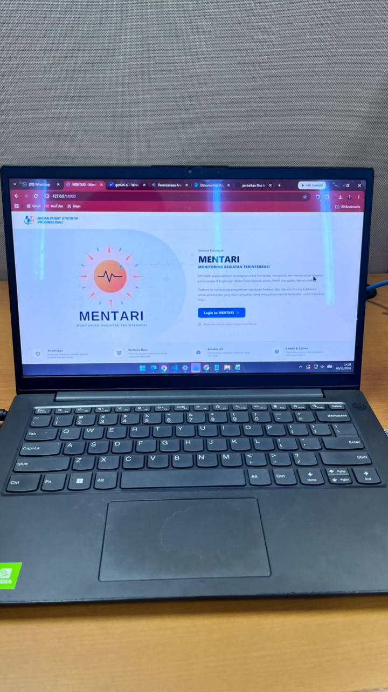
Dashboard admin operasional untuk memantau, mengelola, dan mengevaluasi layanan informasi chatbot AI di PT Kilang Pertamina Internasional.
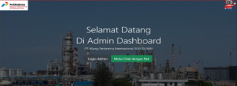
Mengembangkan sistem perangkat keras & lunak terintegrasi untuk proyek otomatisasi "Jemuran Pintar" menggunakan mikrokontroler ESP32.
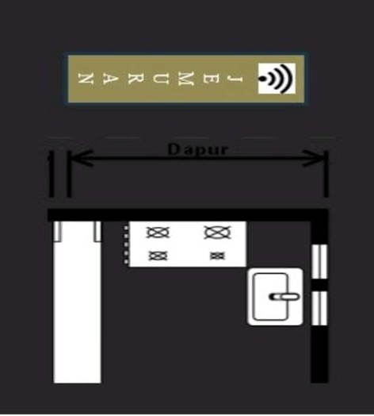
Berperan sebagai Fullstack Developer dalam merancang dan mengembangkan platform e-commerce "Sepatopia" secara menyeluruh menggunakan ekosistem React Native dan React.js.
Tergabung dalam tim riset Pekan Kreativitas Mahasiswa (PKM) Universitas Islam Riau untuk pengembangan alat pemantauan kualitas air berbasis IoT bagi masyarakat di tepian Sungai Siak.
07. CERTIFICATES
Dokumentasi kredensial resmi, sertifikasi keahlian industri, dan penghargaan prestasi.
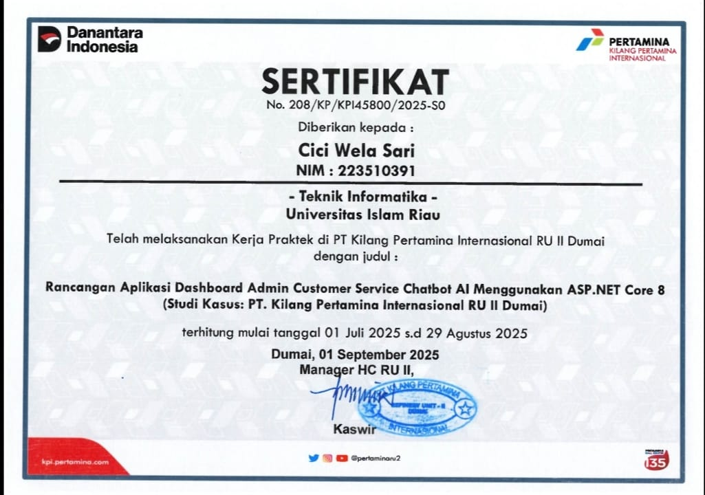
PT Kilang Pertamina Internasional RU II Dumai
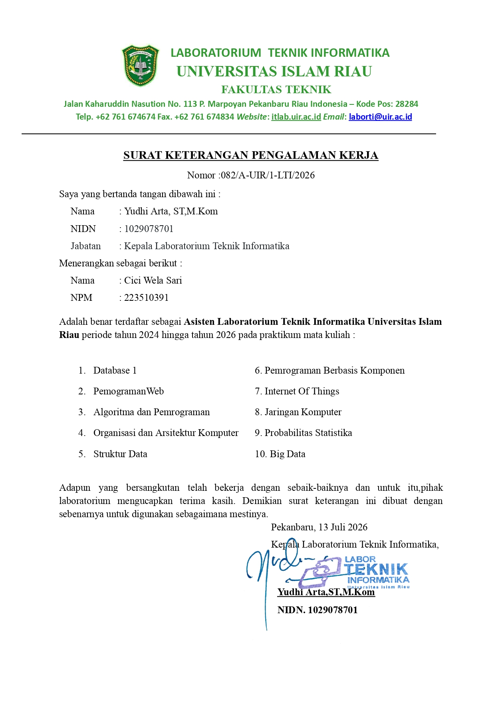
Laboratorium Teknik Informatika UIR (2024-2026)
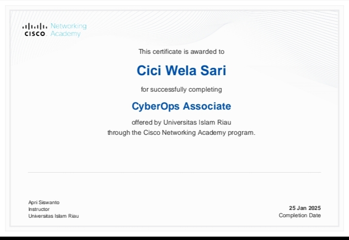
Cisco Networking Academy
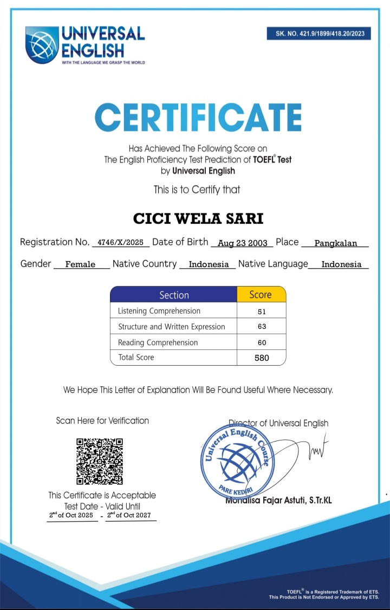
Universal English Pare Kediri
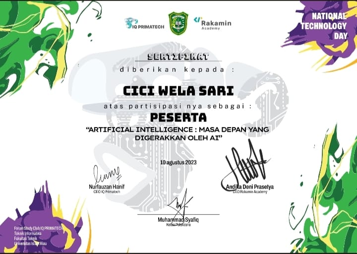
IQ Primatech & Rakamin Academy
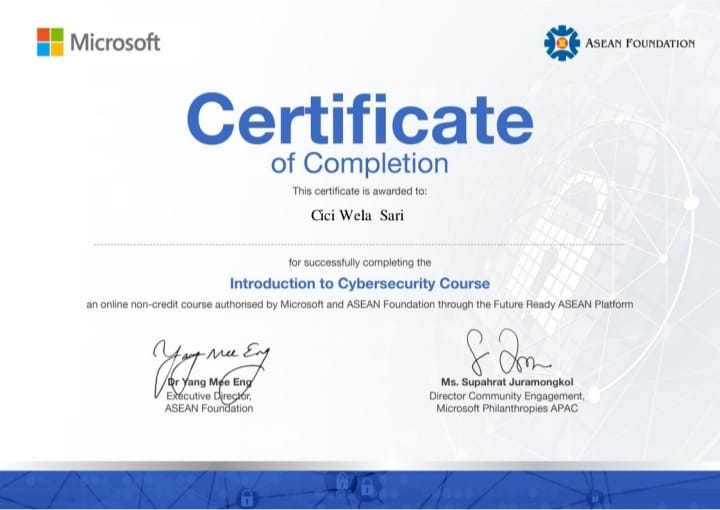
Microsoft & ASEAN Foundation
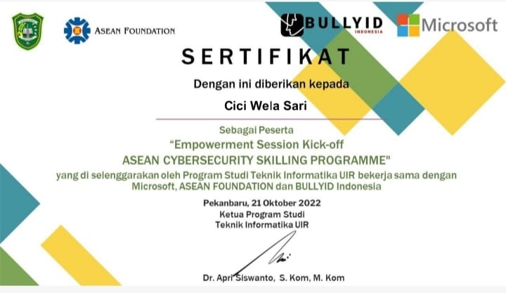
Microsoft, ASEAN Foundation & BullyID
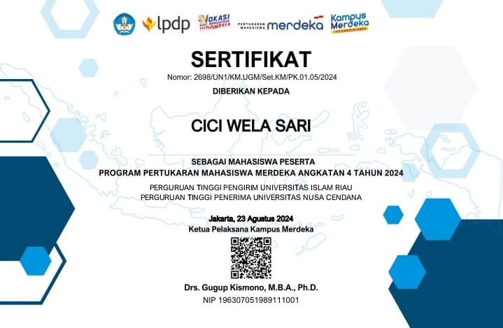
Universitas Nusa Cendana
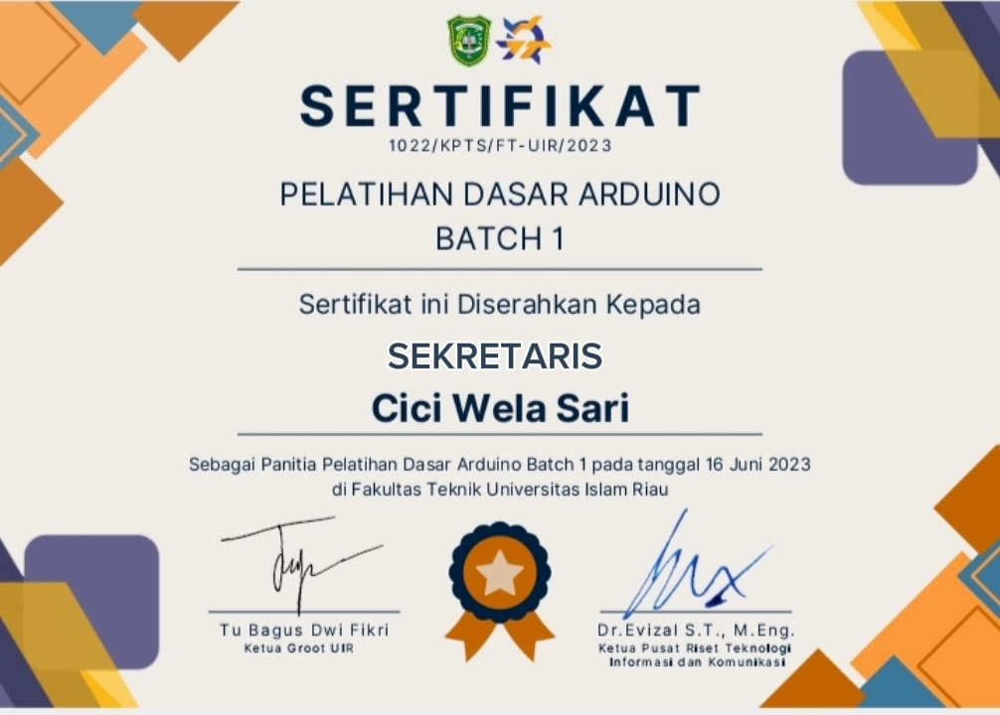
Fakultas Teknik Universitas Islam Riau
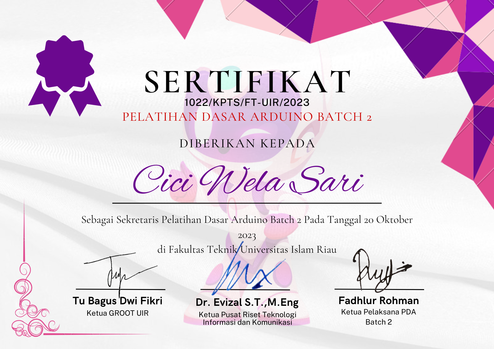
Fakultas Teknik Universitas Islam Riau
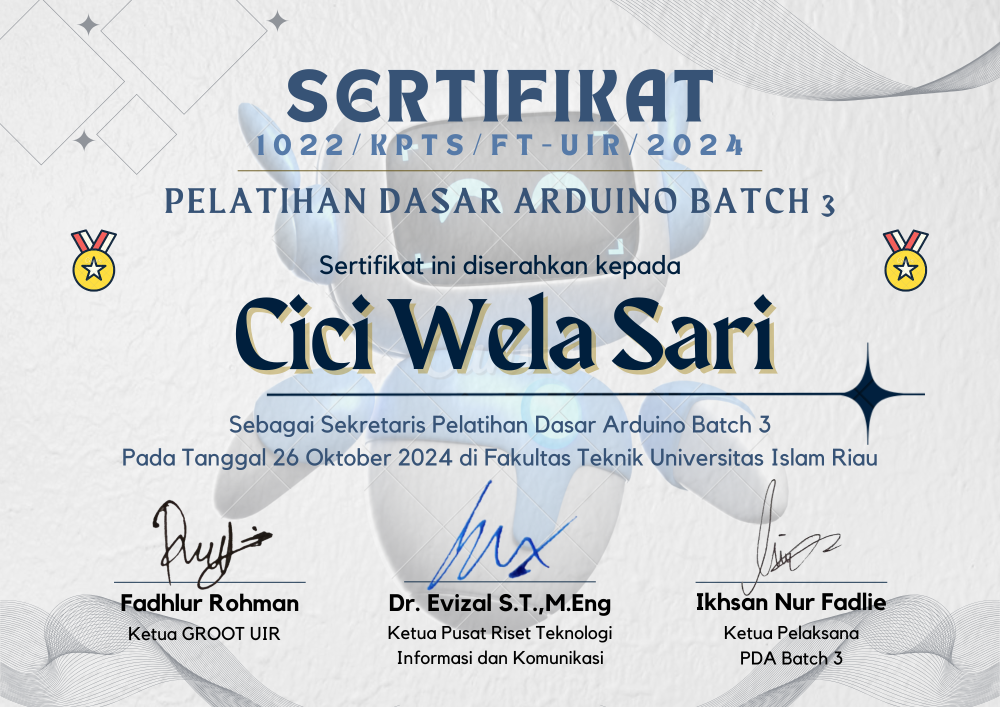
Fakultas Teknik Universitas Islam Riau